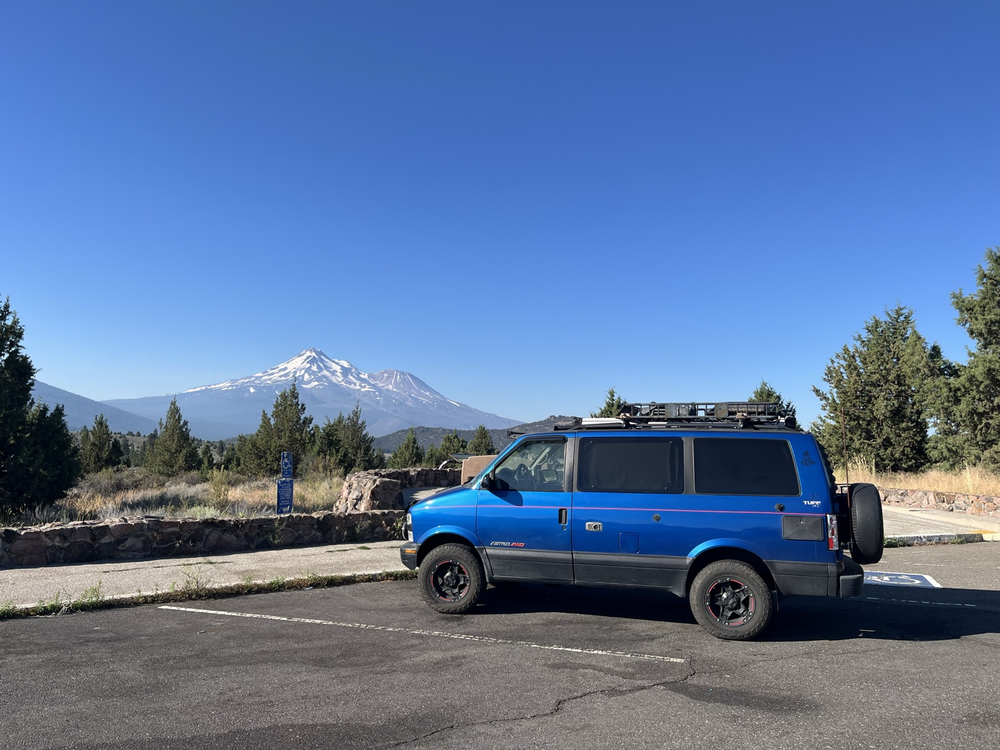
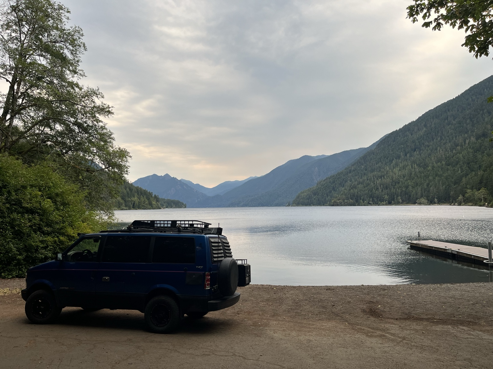
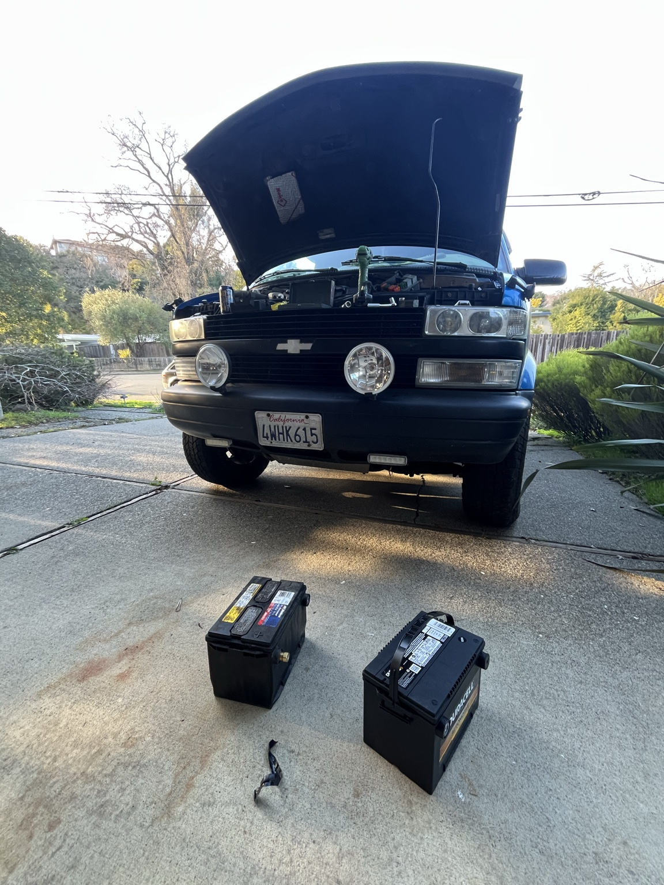

Astro
1999 Astro · 320k+ miles
Surf trips + camping
Pacific Northwest to Baja
Ongoing maintenance + modifications




1999 Astro · 320k+ miles
Surf trips + camping
Pacific Northwest to Baja
Ongoing maintenance + modifications


